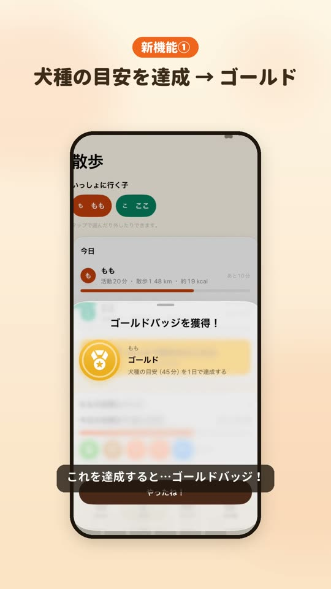
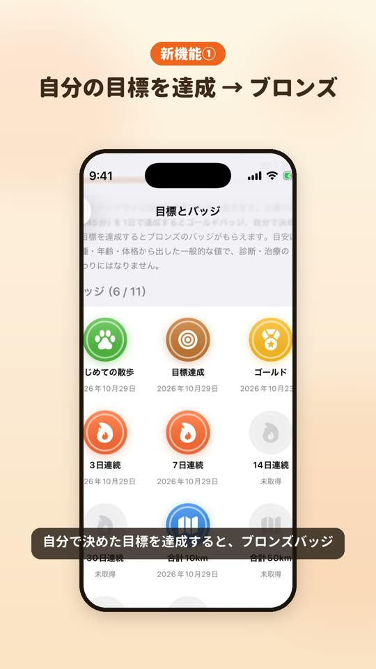
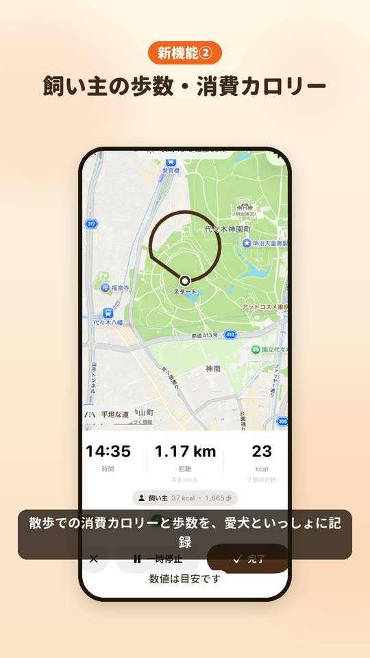
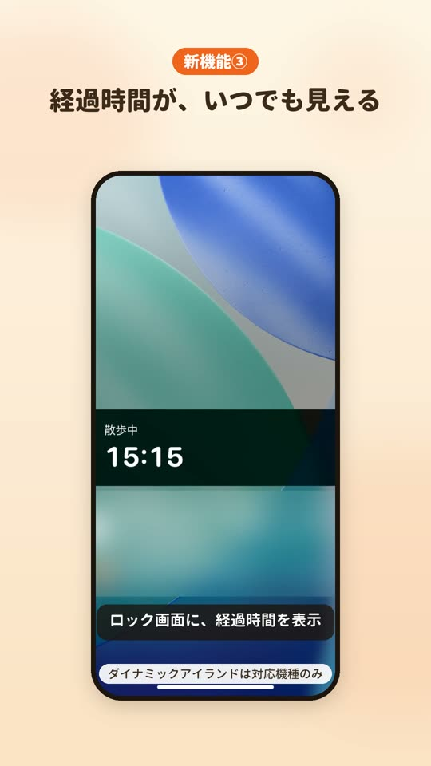
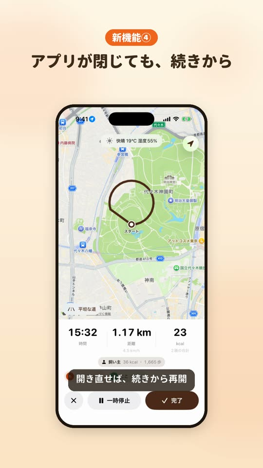
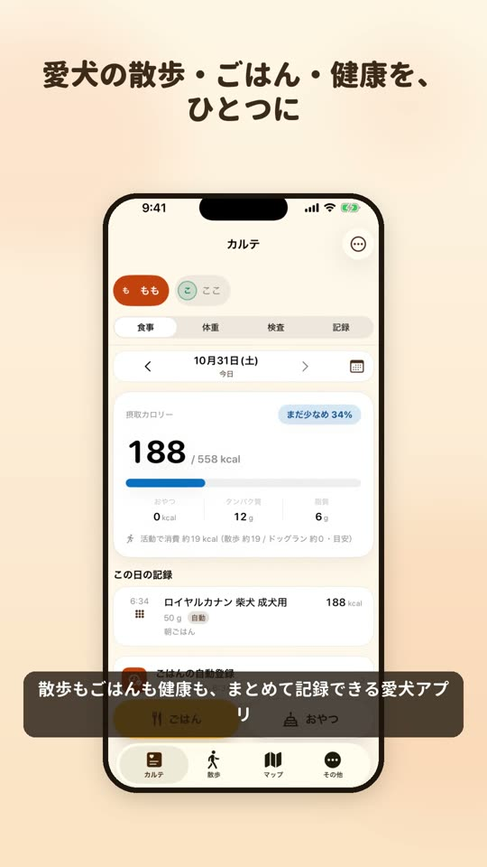

愛犬との散歩が、
もっと楽しくなる。
イヌlog は、散歩・ごはん・体重・健康の記録から、お出かけ先の施設探しまで、ひとつでできる iPhone アプリです。バージョン1.4では、散歩の目標とバッジ、飼い主の歩数・消費カロリーの記録が加わりました。
App Store で見る 紹介動画を見るバージョン1.4の新機能

新機能①目標とバッジ
愛犬ごとに1日の散歩の目標を決められます（初めの値は犬種の目安）。犬種の目安を達成するとゴールドバッジ、自分の目標を達成するとブロンズバッジ。

新機能①集めたくなるバッジ
3・7・14・30日の連続達成、合計距離（10・50・100・500km）、はじめての散歩のバッジも。散歩に出るのが楽しみになります。

新機能②飼い主の歩数・消費カロリー
年齢・体重・身長を登録すると、散歩での飼い主の歩数と消費カロリーを、愛犬といっしょに記録します。今日とこの1週間の合計も確認できます。

新機能③経過時間がいつでも見える
散歩中は、ダイナミックアイランドとロック画面に経過時間を表示します（ダイナミックアイランドは対応機種のみ）。

新機能④記録が途切れない
散歩中にアプリが閉じても、記録は端末に保存。開き直すと続きから再開します。

散歩・ごはん・健康をひとつに
散歩の記録に加えて、ごはん・体重・通院・血液検査まで、愛犬の毎日をまとめて残せます。
これまでの便利機能
- 散歩：GPS でルートと時間を記録。犬種と体重から消費カロリーを計算し、その日の天気も自動で記録
- 帰宅で自動完了：自宅を登録しておくと、帰ってきたときに散歩を自動で完了して保存
- ウィジェット：ホーム画面からワンタップで散歩をスタート
- ごはんの自動登録：時刻とフード・量を決めておくと、毎回入力しなくても食事を記録
- 血液検査：検査結果の用紙を撮影して数値を読み取り、項目ごとにグラフで見比べ
- ドッグラン：場所・時間・活動の強さを記録
- マップ（無料）：近くの動物病院・ペットショップ・ドッグラン・トリミングなどを地図とリストで表示
- Apple Watch：腕元から散歩を記録
- バックアップ：iCloud やファイルに記録を保存して、機種変更にも対応
紹介動画
料金
| マップ | 無料 |
|---|---|
| 散歩・カルテ・Apple Watch 連携 | 月額300円（最初の1か月無料）または 買い切り1,000円 |
月額プランは、iPhone の「設定」→ 自分の名前 →「サブスクリプション」からいつでも解約できます。
動作環境とデータの扱い
- iPhone（iOS 17 以降）。Apple Watch アプリは watchOS 10 以降
- 記録はすべて端末の中に保存され、開発者のサーバーには送信されません（詳しくはプライバシーポリシー）
- ログインやアカウント登録は不要です
消費カロリー・歩数・運動時間の目安、血液検査の「考えられること」は、一般的な目安・参考情報です。診断・治療の代わりにはなりません。気になることは獣医師・医師にご相談ください。動画と画像の画面はデモ用のデータです。